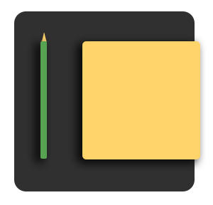
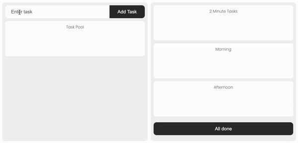

How It Works
- Create your days' tasks
- Drag them into buckets
- Click to mark as completed
- Click All Done when it's home time
Toggle views between default or eisenhower matrix
At the end of the day, any uncompleted tasks get moved back into the task pool and become tomorrow's problem - then rinse and repeat.
